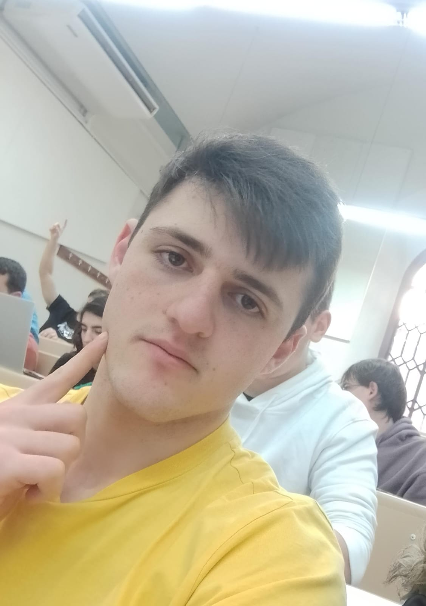

Albert Meliksetyan
Con un talento innato para el diseño, Albert lidera la estética y la experiencia del usuario en Silent Speech. Su creatividad y habilidad para plasmar ideas son fundamentales para la apariencia y la usabilidad del sitio.
Fabio Susin
Como líder programador, Fabio aporta su experiencia técnica y visión estratégica al equipo. Su habilidad para liderar en el desarrollo de software es crucial para la plataforma.
Sergio Gil
Reconocido por su incansable ética laboral, Sergio es el motor impulsor detrás del proyecto. Su dedicación y perseverancia son fundamentales para el éxito de Silent Speech.
Joaquin Beas
Joaquín coordina eficientemente los recursos y dirige el flujo de trabajo del equipo. Su capacidad para resolver problemas y mantener la operación en marcha es esencial para el funcionamiento exitoso de Silent Speech.